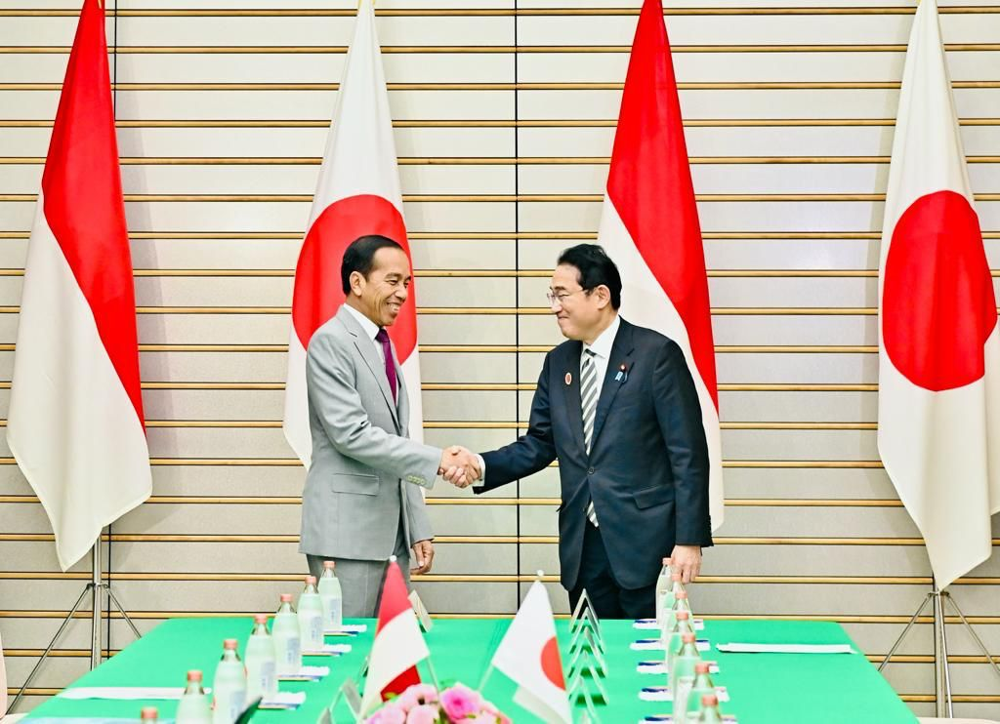
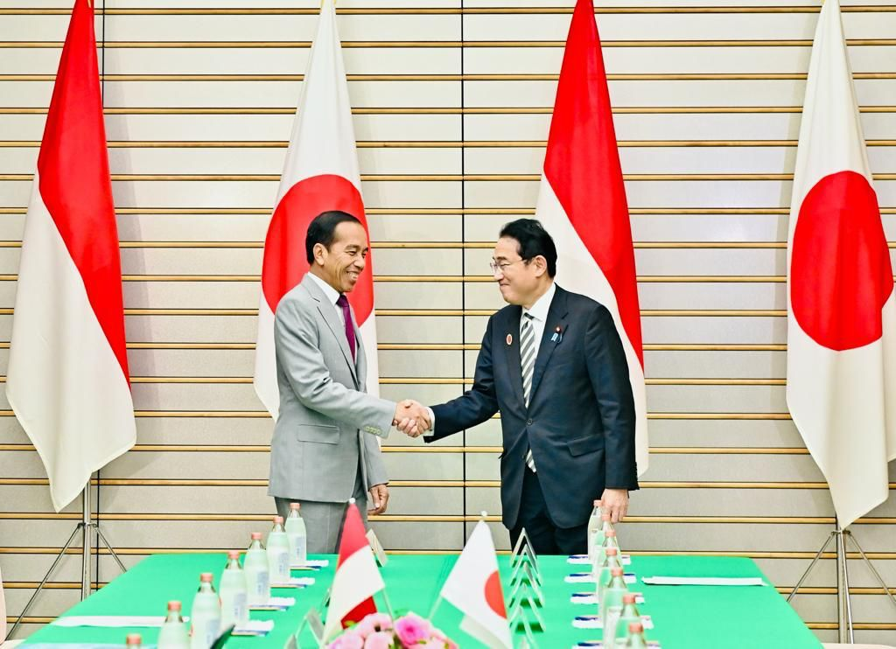

Kerjasama bilateral adalah bentuk kerjasama antara dua negara yang fokus pada hubungan tertentu, seperti perdagangan, politik, atau keamanan. Dalam kerjasama bilateral, kedua negara terlibat langsung untuk mencapai kesepakatan atau manfaat bersama yang spesifik. Contoh nyata dari kerjasama bilateral adalah hubungan antara Indonesia dan Jepang dalam bidang perdagangan dan teknologi. Jepang memberikan bantuan teknis dan investasi di Indonesia, sementara Indonesia menjadi pasar ekspor bagi produk-produk Jepang. Kerjasama bilateral memungkinkan kedua negara untuk saling menguntungkan dalam jangka pendek maupun jangka panjang, dengan cakupan yang lebih terfokus.
 
